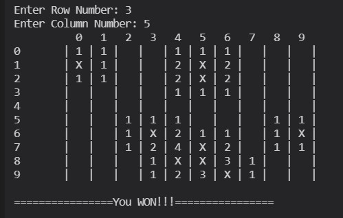

مین روب یک بازی ویدئویی پازل منطقی است که عموماً در رایانههای شخصی بازی میشود. این بازی دارای یک شبکه از کاشیهای قابل کلیک است که "مینها" مخفی شدهاند (در بازی اصلی به عنوان مینهای دریایی نشان داده میشوند) که در سراسر تخته پراکنده شدهاند. هدف این است که تخته را بدون منفجر کردن مینها پاک کنید، با کمک سرنخهایی در مورد تعداد مینهای مجاور. در هر میدان بازی زمین به صورت یک ماتریس است. این ماتریس بر اساس انتخاب کاربر در شروع بازی، به تعداد مشخص شده در ساختار آن، مین ها به صورت رندم در خانه ها قرار می گیرند. پس از آن، مقدار بقیه خانه ها باید تعداد بمب های مجاور آن خانه را نشان دهد. ( ۸ خانه ای که دارای ضلع یا راس مشترک با این خانه هستند)
هنگام اجرا باید صفحه بازی به کاربر نمایش داده شود. در یک نوبت از بازی چهار گزینه
برای کاربر وجود دارد. درصورت انتخاب سه گزینه اول باید مختصات یک خانه از جدول را از کاربر گرفته و عملیات متناظر را انجام دهید. در صورت انتخاب گزینه خروج، بازی تمام شده و به منوی اصلی بازی برمیگردیم
:در هنگام بازی هر خانه یکی از سه وضعیت زیر را دارد
در مرحله اول همه خانه ها در حالت پنهان قرار دارند.
در هر مرحله ابتدا زمین بازی با توجه به اینکه هر خانه در کدام وضعیت قرار دارد چاپ می شود. سپس کاربر باید بتواند با وارد کردن یک مختصات آن خانه را باز و یا نشان کند. نشان کردن یک خانه به این معنی است که اگر در مراحل بعدی کاربر تقاضای باز کردن آن خانه را داشت، بازی باید با چاپ کردن یک پیغام از کاربر بپرسد آیا مطمئن است یا خیر؟ ( این قابلیت برای زمانی است که کاربر به یکی از خانه ها شک دارد که ممکن است در آن بمب وجود داشته باشد)
در صورتی که خانه را برای باز کردن انتخاب کرد باید وضعیت خانه به حالت نمایش دربیاید:
بازی زمانی به اتمام می رسد که تمام خانه های غیر بمب به حالت نمایش در آمده باشند یا کاربر با انتخاب خانه مین، ببازد
پس از اتمام بازی (چه باخت چه برد) مقدار تمام خانه های زمین بایستی چاپ شود و امکان برگشت به منوی اصلی بازی باشد. پس از پایان بازی، نام کاربری بازیکن دریافت شود. در صورت وجود این نام کاربری از قبل، اطلاعاتش آپدیت شود و در غیر این صورت، حساب کاربری ساخته شده و اطلاعات این بازی در آن ذخیره شود.
در منوی اولیه بازی، سه گزینه شروع بازی جدید، مشاهده جدول امتیازات و خروج از بازی را داریم. کاربر با انتخاب هر کدام از گزینه ها، وارد عملیات همان بخش میشود.پس از انتخاب شروع بازی، سه گزینه دیگر برای کاربر قابل انتخاب است:
پس از خروج از بازی، اطلاعات همه بازیکن ها (شامل نام کاربری و تعداد برد و باخت) در فایل ذخیره می شود و پس از شروع مجدد، اطلاعات از فایل خوانده شده و در برنامه قرار می گیرد.
با انتخاب مشاهده جدول امتیازات در منوی برنامه، باید یک رتبه بندی کلی از امتیازهای کسب شده همه بازیکن ها را مشاهده کنیم. بازیکنی که بیشترین برد را دارد، در ابتدای جدول و رتبه 1 قرار می گیرد. در صورتی که دو بازیکن تعداد برد یکسان داشته باشند، فردی که تعداد باخت کمتری دارد رتبه بهتری خواهد داشت. همچنین برنامه شما باید قابلیت ذخیره کردن اطلاعات بازیکنان در فایل و نمایش جدول رده بندی بر اساس زمان به اتمام رساندن بازی را داشته باشد.
سلام! من لیانا خسروی هستم، دانشجوی مهندسی کامپیوتر دانشگاه اصفهان و در حال طراحی یک بازی مین روب به عنوان پروژه نهایی برای این ترم. امیدوارم از معرفی من لذت برده باشید
ما را در شبکههای اجتماعی دنبال کنید:
.ما را در شبکههای اجتماعی دنبال کنید و گیتهاب ما را بررسی کنید